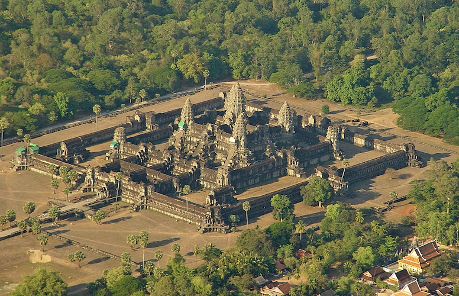

WELLCOME TO CAMBODIA
ប្រាសាទកោះកេរ្តិ៍

ប្រាសាទកោះកេរ្តិ៍ គឺជាទីតាំងបុរាណវត្ថុដែលដាច់ស្រយាលមួយនៅភាគខាងជើង នៅខេត្តព្រះវិហារ នៃប្រទេសកម្ពុជា ដែលមានចម្ងាយប្រហែល ១២០គីឡូម៉ែត្រ ពីខេត្តសៀមរាប និងជារមណីយដ្ឋានអង្គរ។ ជាតំបន់ពោលពេញទៅដោយព្រៃជាច្រើនអនេកដែលមានប្រជាជនរស់នៅតិចតួច។ ជម្រកជាង១៨០ ត្រូវបានរកឃើញនៅក្នុងតំបន់ការពារដែលមានផ្ទៃដី ៨១គីឡូម៉ែត្រការ៉េ ។ តំបន់មិនទាន់ត្រូវបានដោះមីនទាំងស្រុងនោះទេ។
-
ប្រាសាទកោះកេរ្តិ៍ គឺជាទីតាំងបុរាណវត្ថុដែលដាច់ស្រយាលមួយនៅភាគខាងជើង នៅខេត្តព្រះវិហារ នៃប្រទេសកម្ពុជា ដែលមានចម្ងាយប្រហែល ១២០គីឡូម៉ែត្រ ពីខេត្តសៀមរាប និងជារមណីយដ្ឋានអង្គរ។ ជាតំបន់ពោលពេញទៅដោយព្រៃជាច្រើនអនេកដែលមានប្រជាជនរស់នៅតិចតួច។ ជម្រកជាង១៨០ ត្រូវបានរកឃើញនៅក្នុងតំបន់ការពារដែលមានផ្ទៃដី ៨១គីឡូម៉ែត្រការ៉េ ។ តំបន់មិនទាន់ត្រូវបានដោះមីនទាំងស្រុងនោះទេ។
ប្រាសាទកោះកេរ្តិ៍ បានកសាងឡើងក្នុងរជ្ជកាលព្រះបាទជ័យវរ័្មនទី៤ ឧទ្ទិសថ្វាយព្រះឥសូរតាមបែបព្រហ្មញ្ញសាសនា។ ប្រាសាទនេះពីដើមឈ្មោះ (ឆោកគគ៌្យរ) ឬផៃ្ទដីគោកគគីរ នៃអតីតរាជធានីលិង្គបុរៈ សព្វថៃ្ងហៅថា អតីតរាជធានីកោះកេរ្ត៍ មានទំហំផៃ្ទដី១៦X១៦គីឡូម៉ែត្រ រួមមាន៩៨ប្រាសាទ។ ប្រាសាទនេះមាន៧ជាន់ មានកំពស់ ៣៥ម៉ែត្រ ដែលកសាងឡើងតាំងពីសម័យបុរាណ ទុកសំរាប់ជាការគោរពបូជាតាមលទ្ធិព្រហ្មញ្ញសាសនា។ កោះកេរ ជាឈ្មោះទំនើបសម្រាប់ទីក្រុងដ៏សំខាន់មួយរបស់អាណាចក្រខ្មែរ។ នៅក្នុងសិលាចារឹក ទីក្រុងនេះត្រូវបានរៀបរាប់ថាជា លិង្គបុរៈ ឬ ឆោកគគ៌្យរ ។ កោះកេរ្តិ៍ ឬឆោកគគ៌្យរ គឺជារាជធានីចាស់បុរាណ មានអាយុប្រមាណជាង ១០០០ឆ្នាំ មកហើយ។ ឆោកគគ៌្យរ ជាពាក្យខ្មែរបុរាណ បើនិយាយតាមសព្វថ្ងៃ គឺបឹងគគីរ ឬស្រះគគីរ។ ពាក្យឆោកគគ៌្យរនេះហើយដែលក្លាយមកជាពាក្យ កោះកេរ្តិ៍។ រមណីយដ្ឋានកោះកេរ ត្រូវបានចុះក្នុងបញ្ជីបេតិកភណ្ឌពិភពលោករបស់អង្គការយូណេស្កូ នៅថ្ងៃទី១៧ ខែកញ្ញា ឆ្នាំ២០២៣ ក្នុងសម័យប្រជុំលើកទី៤៥ នៃគណៈកម្មាធិការបេតិកភណ្ឌពិភពលោក នៅទីក្រុងរីយ៉ាដ ព្រះរាជាណាចក្រអារ៉ាប៊ីសាអូឌីត។
ប្រាសាទព្រះវិហារ

ភ្នំពេញ ៖ អង្គការ UNESCO បានដាក់ប្រាសាទព្រះវិហារជាសម្បត្តិបេតិកភណ្ឌពិភពលោក កាលនៅថ្ងៃទី៧ ខែកក្កដា ឆ្នាំ២០០៨ ក្នុងសម័យប្រជុំលើកទី៣២ នៅទីក្រុងកេបិក ប្រទេសកាណាដា។
ការសម្រេចបញ្ចូលប្រាសាទព្រះវិហារ ជាសម្បត្តិបេតិកភណ្ឌពិភពលោកនេះ មិនមែនជាករណី ចៃដន្យនោះទេ តែជាព្រឹត្តិការណ៍ប្រវត្តិសាស្រ្ត បង្ហាញពីកិច្ចខិតខំប្រឹងប្រែងរបស់ រាជរដ្ឋាភិបាល ក្នុងការ ថែរក្សាការពារសម្បត្តិវប្បធម៌ជាតិ។ រាជរដ្ឋាភិបាល បានប្រមូលនិងចងក្រង ឯកសារជាច្រើន ដាក់ជូនដល់អង្គការ UNESCO ជាមួយនិងការពន្យល់ បកស្រាយយ៉ាងច្បាស់លាស់ លើគោលជំហរ ឆន្ទៈក្នុងការអភិរក្ស និងអភិវឌ្ឍន៍ប្រាសាទបុរាណរបស់ខ្លួន។ យើងពិតជាមានមោទនភាពយ៉ាងក្រៃលែងចំពោះអតីត ព្រះមហាក្សត្រ និងបុព្វបុរសខ្មែរយើង ដែល បានសាងសង់ប្រាសាទព្រះវិហារ និងប្រាសាទបុរាណដទៃទៀត នៅពាសពេញប្រទេសទុកឲ្យកូនចៅរហូតសព្វថ្ងៃនេះ ធ្វើឲ្យអន្តរជាតិ កោតស្ញប់ស្ញែងចំពោះពូជសាសន៍របស់យើងជាទីបំផុត។ យើងជាកូនចៅ ចៅទួត ចងចាំជានិច្ចចំពោះព្រះរាជបូជនកិច្ចរបស់ ព្រះករុណាព្រះបាទសម្តេចព្រះបរមរតនកោដ្ឋ នរោត្តមសីហនុ អតីតព្រះមហាក្សត្រនៃព្រះរាជាណាចក្រកម្ពុជា ដែលព្រះអង្គបានទាមទារ តតាំងក្តី នៅតុលាការអន្តរជាតិក្រុងឡាអេ បានកាត់ក្តីឲ្យកម្ពុជាឈ្នះលើសំណុំរឿងប្រាសាទព្រះវិហារ នៅថ្ងៃទី១៥ ខែមិថុនា ឆ្នាំ១៩៦២។ បច្ចុប្បន្ននេះប្រាសាទព្រះវិហារ ទទទួលបានការអភិរក្សនិងអភិវឌ្ឍន៍ យ៉ាងយកចិត្តទុកដាក់ពីរាជរដ្ឋាភិបាលនិងអង្គការ UNESCO រួមនឹងដៃគូអន្តរជាតិជាច្រើនទៀត ៕
ប្រាសាទអង្ករវត្ត

ប្រាសាទអង្គរវត្តរបស់កម្ពុជា បានជាប់ជាតំបន់រមណីយដ្ឋានទេសចរណ៍ប្រវត្តិសាស្ត្រ និងវប្បធម៌ លេខ១ របស់អាស៊ី នៅលើវេបសាយបេតិកភណ្ឌពិភពលោកនានារបស់អង្គការយូណេស្កូ ដែលជាគោលដៅទេសចរណ៍ធំបំផុតសម្រាប់ភ្ញៀវទេសចរមកពីបណ្ដាប្រទេសផ្សេងៗនៅលើពិភពលោក។ នេះបើយោងតាមប្រភពពីវេបសាយ Asian Correspondent ចុះផ្សាយនៅថ្ងៃទី២ ខែមករា ឆ្នាំ២០១៨។
ZESTRADAR
Man Helps Pregnant Tinder Match Give Birth After Three Dates
ប្រភពដដែល បានចាត់ទុកប្រាសាទអង្គរវត្ត ជាទីតាំងប្រវត្តិសាស្ត្រដ៏មានសារៈសំខាន់នៅក្នុងតំបន់អាស៊ីអាគ្នេយ៍។ អង្គរវត្ត ក៏ជាប់ជាតំបន់ទេសចរណ៍បេតិកភណ្ឌវប្បធម៌ និងធម្មជាតិ ដែលជាគោលដៅរបស់ទេសចរ នៅលើវេបសាយ TripAdvisor ផងដែរ។
-
លក្ខណៈពិសេសរបស់អង្គរវត្តប្រាសាទដែលបង្រួមឧបទ្វីបទាំងអស់បញ្ជូលគ្នា។